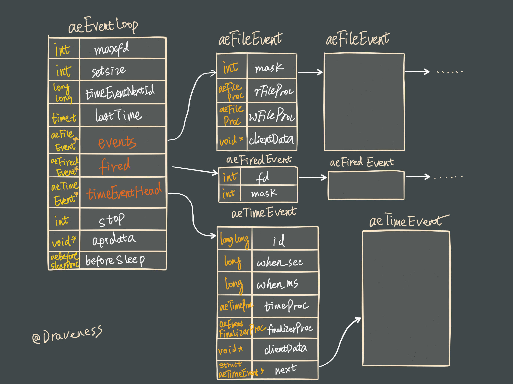
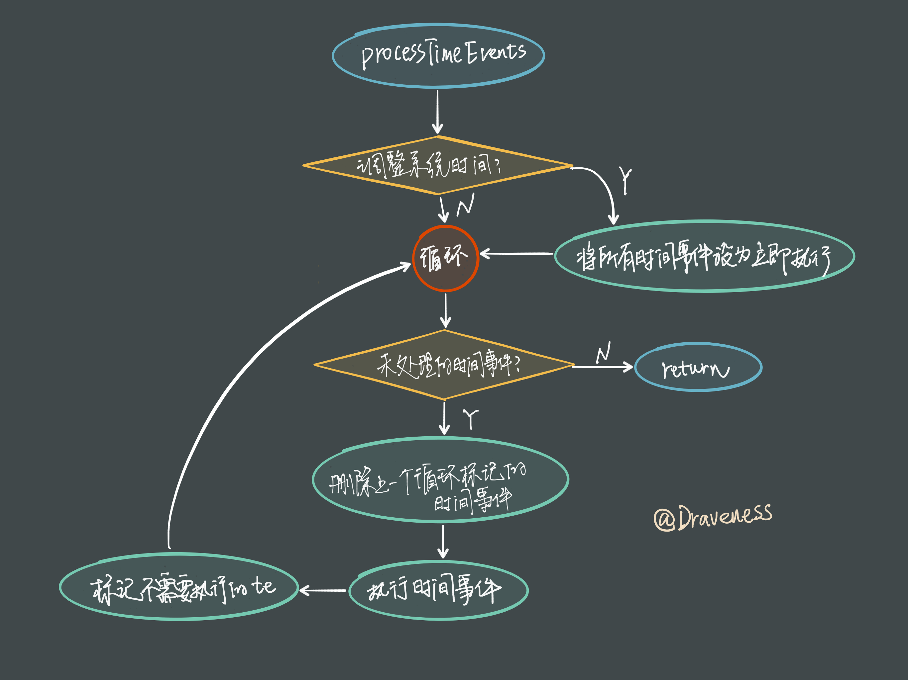
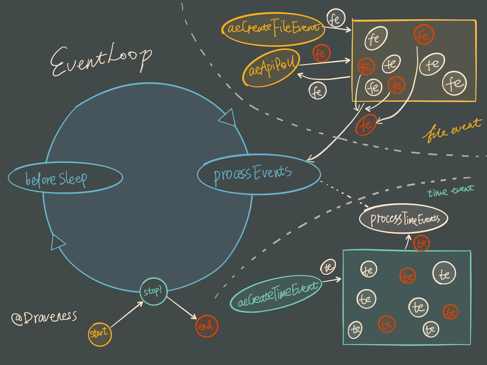
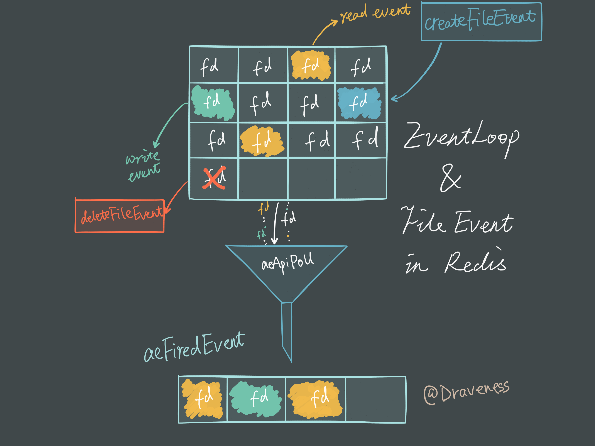
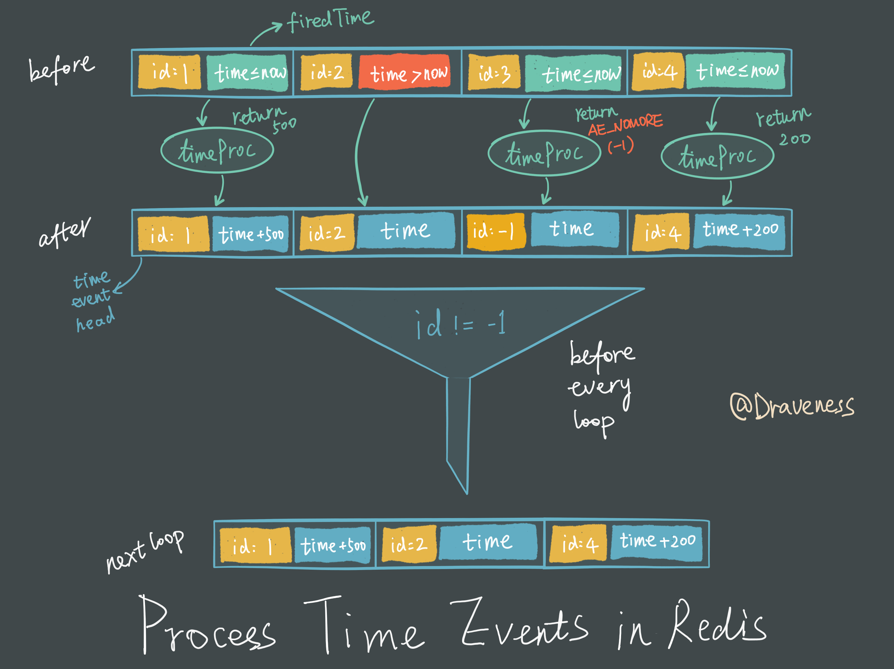

<!DOCTYPE HTML>
<html lang="" >
    <head>
        <meta charset="UTF-8">
        <meta content="text/html; charset=utf-8" http-equiv="Content-Type">
        <title>事件循环 · GitBook</title>
        <meta http-equiv="X-UA-Compatible" content="IE=edge" />
        <meta name="description" content="">
        <meta name="generator" content="GitBook 3.2.3">
        
        
        
    
    <link rel="stylesheet" href="../../gitbook/style.css">

    
            
                
                <link rel="stylesheet" href="../../gitbook/gitbook-plugin-highlight/website.css">
                
            
                
                <link rel="stylesheet" href="../../gitbook/gitbook-plugin-search/search.css">
                
            
                
                <link rel="stylesheet" href="../../gitbook/gitbook-plugin-fontsettings/website.css">
                
            
        

    

    
        
    
        
    
        
    
        
    
        
    
        
    

        
    
    
    <meta name="HandheldFriendly" content="true"/>
    <meta name="viewport" content="width=device-width, initial-scale=1, user-scalable=no">
    <meta name="apple-mobile-web-app-capable" content="yes">
    <meta name="apple-mobile-web-app-status-bar-style" content="black">
    <link rel="apple-touch-icon-precomposed" sizes="152x152" href="../../gitbook/images/apple-touch-icon-precomposed-152.png">
    <link rel="shortcut icon" href="../../gitbook/images/favicon.ico" type="image/x-icon">

    
    <link rel="next" href="redis-io-multiplexing.html" />
    
    
    <link rel="prev" href="redis-cli.html" />
    

    </head>
    <body>
        
<div class="book">
    <div class="book-summary">
        
            
<div id="book-search-input" role="search">
    <input type="text" placeholder="Type to search" />
</div>

            
                <nav role="navigation">
                


<ul class="summary">
    
    

    

    
        
        
    
        <li class="chapter " data-level="1.1" data-path="../../">
            
                <a href="../../">
            
                    
                    iOS 开发
            
                </a>
            

            
            <ul class="articles">
                
    
        <li class="chapter " data-level="1.1.1" data-path="../../ObjC-Basic/">
            
                <a href="../../ObjC-Basic/">
            
                    
                    Objective-C 语言基础
            
                </a>
            

            
            <ul class="articles">
                
    
        <li class="chapter " data-level="1.1.1.1" data-path="../../ObjC-Basic/Class.html">
            
                <a href="../../ObjC-Basic/Class.html">
            
                    
                    类与对象
            
                </a>
            

            
        </li>
    
        <li class="chapter " data-level="1.1.1.2" data-path="../../ObjC-Basic/Block.html">
            
                <a href="../../ObjC-Basic/Block.html">
            
                    
                    Block 编程
            
                </a>
            

            
        </li>
    
        <li class="chapter " data-level="1.1.1.3" data-path="../../ObjC-Basic/Runtime.html">
            
                <a href="../../ObjC-Basic/Runtime.html">
            
                    
                    Objective-C Runtime
            
                </a>
            

            
        </li>
    
        <li class="chapter " data-level="1.1.1.4" data-path="../../ObjC-Basic/MM.html">
            
                <a href="../../ObjC-Basic/MM.html">
            
                    
                    Objective-C 内存管理
            
                </a>
            

            
        </li>
    
        <li class="chapter " data-level="1.1.1.5" data-path="../../ObjC-Basic/Runloop.html">
            
                <a href="../../ObjC-Basic/Runloop.html">
            
                    
                    Runloop
            
                </a>
            

            
        </li>
    

            </ul>
            
        </li>
    
        <li class="chapter " data-level="1.1.2" data-path="../../Cocoa-Touch/">
            
                <a href="../../Cocoa-Touch/">
            
                    
                    Cocoa Touch
            
                </a>
            

            
            <ul class="articles">
                
    
        <li class="chapter " data-level="1.1.2.1" data-path="../../Cocoa-Touch/Event-Handling.html">
            
                <a href="../../Cocoa-Touch/Event-Handling.html">
            
                    
                    事件处理
            
                </a>
            

            
        </li>
    
        <li class="chapter " data-level="1.1.2.2" data-path="../../Cocoa-Touch/UIApplication.html">
            
                <a href="../../Cocoa-Touch/UIApplication.html">
            
                    
                    UIApplication
            
                </a>
            

            
        </li>
    
        <li class="chapter " data-level="1.1.2.3" data-path="../../Cocoa-Touch/UIView-Basic.html">
            
                <a href="../../Cocoa-Touch/UIView-Basic.html">
            
                    
                    UIView
            
                </a>
            

            
        </li>
    
        <li class="chapter " data-level="1.1.2.4" data-path="../../Cocoa-Touch/UIViewController.html">
            
                <a href="../../Cocoa-Touch/UIViewController.html">
            
                    
                    UIViewController
            
                </a>
            

            
        </li>
    
        <li class="chapter " data-level="1.1.2.5" data-path="../../Cocoa-Touch/Animation.html">
            
                <a href="../../Cocoa-Touch/Animation.html">
            
                    
                    动画
            
                </a>
            

            
        </li>
    
        <li class="chapter " data-level="1.1.2.6" data-path="../../Cocoa-Touch/Network.html">
            
                <a href="../../Cocoa-Touch/Network.html">
            
                    
                    网络编程
            
                </a>
            

            
        </li>
    
        <li class="chapter " data-level="1.1.2.7" data-path="../../Cocoa-Touch/Multithreading.html">
            
                <a href="../../Cocoa-Touch/Multithreading.html">
            
                    
                    并发编程
            
                </a>
            

            
        </li>
    
        <li class="chapter " data-level="1.1.2.8" data-path="../../Cocoa-Touch/File-System.html">
            
                <a href="../../Cocoa-Touch/File-System.html">
            
                    
                    文件系统
            
                </a>
            

            
        </li>
    
        <li class="chapter " data-level="1.1.2.9" data-path="../../Cocoa-Touch/Design.html">
            
                <a href="../../Cocoa-Touch/Design.html">
            
                    
                    设计模式
            
                </a>
            

            
        </li>
    
        <li class="chapter " data-level="1.1.2.10" data-path="../../Cocoa-Touch/Performance.html">
            
                <a href="../../Cocoa-Touch/Performance.html">
            
                    
                    性能
            
                </a>
            

            
        </li>
    

            </ul>
            
        </li>
    
        <li class="chapter " data-level="1.1.3" data-path="../../Swift/">
            
                <a href="../../Swift/">
            
                    
                    Swift
            
                </a>
            

            
            <ul class="articles">
                
    
        <li class="chapter " data-level="1.1.3.1" data-path="../../Swift/Class.html">
            
                <a href="../../Swift/Class.html">
            
                    
                    类与对象
            
                </a>
            

            
        </li>
    
        <li class="chapter " data-level="1.1.3.2" data-path="../../Swift/Struct-And-Enum.html">
            
                <a href="../../Swift/Struct-And-Enum.html">
            
                    
                    结构体与枚举
            
                </a>
            

            
        </li>
    
        <li class="chapter " data-level="1.1.3.3" data-path="../../Swift/Function-And-Closure.html">
            
                <a href="../../Swift/Function-And-Closure.html">
            
                    
                    函数与闭包
            
                </a>
            

            
        </li>
    

            </ul>
            
        </li>
    
        <li class="chapter " data-level="1.1.4" data-path="../../Interview/">
            
                <a href="../../Interview/">
            
                    
                    面试问题
            
                </a>
            

            
            <ul class="articles">
                
    
        <li class="chapter " data-level="1.1.4.1" data-path="../../Interview/iOSInterviewQuestions/">
            
                <a href="../../Interview/iOSInterviewQuestions/">
            
                    
                    《招聘一个靠谱的iOS》
            
                </a>
            

            
            <ul class="articles">
                
    
        <li class="chapter " data-level="1.1.4.1.1" data-path="../../Interview/iOSInterviewQuestions/Volume-One/volume-one.html">
            
                <a href="../../Interview/iOSInterviewQuestions/Volume-One/volume-one.html">
            
                    
                    《招聘一个靠谱的iOS》(上)
            
                </a>
            

            
        </li>
    
        <li class="chapter " data-level="1.1.4.1.2" data-path="../../Interview/iOSInterviewQuestions/Volume-Two/volume-two.html">
            
                <a href="../../Interview/iOSInterviewQuestions/Volume-Two/volume-two.html">
            
                    
                    《招聘一个靠谱的iOS》(下)
            
                </a>
            

            
        </li>
    

            </ul>
            
        </li>
    
        <li class="chapter " data-level="1.1.4.2" data-path="../../interview/ZhiHu-QA/">
            
                <a href="../../interview/ZhiHu-QA/">
            
                    
                    关于一些 iOS 面试问题的解答
            
                </a>
            

            
        </li>
    
        <li class="chapter " data-level="1.1.4.3" data-path="../../interview/iOSDeveloperQA/">
            
                <a href="../../interview/iOSDeveloperQA/">
            
                    
                    iOS 开发面试问题
            
                </a>
            

            
        </li>
    
        <li class="chapter " data-level="1.1.4.4" data-path="../../interview/MXR-QA/">
            
                <a href="../../interview/MXR-QA/">
            
                    
                    MXR 面试问题
            
                </a>
            

            
        </li>
    

            </ul>
            
        </li>
    
        <li class="chapter " data-level="1.1.5" data-path="../">
            
                <a href="../">
            
                    
                    源码分析
            
                </a>
            

            
            <ul class="articles">
                
    
        <li class="chapter " data-level="1.1.5.1" data-path="../AFNetworking/AFNetworking_1.html">
            
                <a href="../AFNetworking/AFNetworking_1.html">
            
                    
                    AFNetworking
            
                </a>
            

            
            <ul class="articles">
                
    
        <li class="chapter " data-level="1.1.5.1.1" data-path="../AFNetworking/AFNetworking_2.html">
            
                <a href="../AFNetworking/AFNetworking_2.html">
            
                    
                    AFURLSessionManager
            
                </a>
            

            
        </li>
    
        <li class="chapter " data-level="1.1.5.1.2" data-path="../AFNetworking/AFNetworking_3.html">
            
                <a href="../AFNetworking/AFNetworking_3.html">
            
                    
                    AFURLSerialization
            
                </a>
            

            
        </li>
    
        <li class="chapter " data-level="1.1.5.1.3" data-path="../AFNetworking/AFNetworking_4.html">
            
                <a href="../AFNetworking/AFNetworking_4.html">
            
                    
                    AFNetworkReachabilityManager
            
                </a>
            

            
        </li>
    
        <li class="chapter " data-level="1.1.5.1.4" data-path="../AFNetworking/AFNetworking_5.html">
            
                <a href="../AFNetworking/AFNetworking_5.html">
            
                    
                    HTTPS
            
                </a>
            

            
        </li>
    

            </ul>
            
        </li>
    
        <li class="chapter " data-level="1.1.5.2" data-path="../Alamofire/">
            
                <a href="../Alamofire/">
            
                    
                    Alamofire
            
                </a>
            

            
        </li>
    
        <li class="chapter " data-level="1.1.5.3" data-path="../architecture/mvx.html">
            
                <a href="../architecture/mvx.html">
            
                    
                    architecture
            
                </a>
            

            
            <ul class="articles">
                
    
        <li class="chapter " data-level="1.1.5.3.1" data-path="../architecture/mvx-model.html">
            
                <a href="../architecture/mvx-model.html">
            
                    
                    MVX-Model
            
                </a>
            

            
        </li>
    
        <li class="chapter " data-level="1.1.5.3.2" data-path="../architecture/mvx-view.html">
            
                <a href="../architecture/mvx-view.html">
            
                    
                    MVX-View
            
                </a>
            

            
        </li>
    
        <li class="chapter " data-level="1.1.5.3.3" data-path="../architecture/mvx-controller.html">
            
                <a href="../architecture/mvx-controller.html">
            
                    
                    MVX-Controller
            
                </a>
            

            
        </li>
    

            </ul>
            
        </li>
    
        <li class="chapter " data-level="1.1.5.4" >
            
                <span>
            
                    
                    AsyncDisplayKit
            
                </span>
            

            
            <ul class="articles">
                
    
        <li class="chapter " data-level="1.1.5.4.1" data-path="../AsyncDisplayKit/ASDK_1.html">
            
                <a href="../AsyncDisplayKit/ASDK_1.html">
            
                    
                    提升界面的渲染性能
            
                </a>
            

            
        </li>
    
        <li class="chapter " data-level="1.1.5.4.2" data-path="../AsyncDisplayKit/ASDK_2.html">
            
                <a href="../AsyncDisplayKit/ASDK_2.html">
            
                    
                    布局算法
            
                </a>
            

            
        </li>
    
        <li class="chapter " data-level="1.1.5.4.3" data-path="../AsyncDisplayKit/ASDK_3.html">
            
                <a href="../AsyncDisplayKit/ASDK_3.html">
            
                    
                    预加载与智能预加载
            
                </a>
            

            
        </li>
    

            </ul>
            
        </li>
    
        <li class="chapter " data-level="1.1.5.5" >
            
                <span>
            
                    
                    BlocksKit
            
                </span>
            

            
            <ul class="articles">
                
    
        <li class="chapter " data-level="1.1.5.5.1" data-path="../BlocksKit/BlocksKit_1.html">
            
                <a href="../BlocksKit/BlocksKit_1.html">
            
                    
                    神奇的 BlocksKit (一)
            
                </a>
            

            
        </li>
    
        <li class="chapter " data-level="1.1.5.5.2" data-path="../BlocksKit/BlocksKit_2.html">
            
                <a href="../BlocksKit/BlocksKit_2.html">
            
                    
                    神奇的 BlocksKit (二)
            
                </a>
            

            
        </li>
    

            </ul>
            
        </li>
    
        <li class="chapter " data-level="1.1.5.6" data-path="../Blog/initialize-comments.html">
            
                <a href="../Blog/initialize-comments.html">
            
                    
                    Gitalk/Gitment
            
                </a>
            

            
        </li>
    
        <li class="chapter " data-level="1.1.5.7" >
            
                <span>
            
                    
                    CocoaPods
            
                </span>
            

            
            <ul class="articles">
                
    
        <li class="chapter " data-level="1.1.5.7.1" data-path="../CocoaPods/CocoaPods.html">
            
                <a href="../CocoaPods/CocoaPods.html">
            
                    
                    CocoaPods 都做了什么
            
                </a>
            

            
        </li>
    
        <li class="chapter " data-level="1.1.5.7.2" data-path="../CocoaPods/DSL.html">
            
                <a href="../CocoaPods/DSL.html">
            
                    
                    DSL 以及 DSL 的应用
            
                </a>
            

            
        </li>
    

            </ul>
            
        </li>
    
        <li class="chapter " data-level="1.1.5.8" >
            
                <span>
            
                    
                    Database
            
                </span>
            

            
            <ul class="articles">
                
    
        <li class="chapter " data-level="1.1.5.8.1" data-path="../Database/concurrency-control.html">
            
                <a href="../Database/concurrency-control.html">
            
                    
                    数据库并发控制
            
                </a>
            

            
        </li>
    
        <li class="chapter " data-level="1.1.5.8.2" data-path="../Database/dynamo.html">
            
                <a href="../Database/dynamo.html">
            
                    
                    分布式键值存储 Dynamo
            
                </a>
            

            
        </li>
    
        <li class="chapter " data-level="1.1.5.8.3" data-path="../Database/leveldb-bigtable.html">
            
                <a href="../Database/leveldb-bigtable.html">
            
                    
                    Bigtable 和 LevelDB 的实现
            
                </a>
            

            
        </li>
    
        <li class="chapter " data-level="1.1.5.8.4" data-path="../Database/mongodb-to-mysql.html">
            
                <a href="../Database/mongodb-to-mysql.html">
            
                    
                    MongoDB 迁移到 MySQL
            
                </a>
            

            
        </li>
    
        <li class="chapter " data-level="1.1.5.8.5" data-path="../Database/mongodb-wiredtiger.html">
            
                <a href="../Database/mongodb-wiredtiger.html">
            
                    
                    MongoDB 和 WiredTiger
            
                </a>
            

            
        </li>
    
        <li class="chapter " data-level="1.1.5.8.6" data-path="../Database/mysql.html">
            
                <a href="../Database/mysql.html">
            
                    
                    MySQL 和 InnoDB
            
                </a>
            

            
        </li>
    
        <li class="chapter " data-level="1.1.5.8.7" data-path="../Database/sql-index-intro.html">
            
                <a href="../Database/sql-index-intro.html">
            
                    
                    MySQL 索引设计概要
            
                </a>
            

            
        </li>
    
        <li class="chapter " data-level="1.1.5.8.8" data-path="../Database/sql-index-performance.html">
            
                <a href="../Database/sql-index-performance.html">
            
                    
                    MySQL 索引性能分析概要
            
                </a>
            

            
        </li>
    
        <li class="chapter " data-level="1.1.5.8.9" data-path="../Database/transaction.html">
            
                <a href="../Database/transaction.html">
            
                    
                    MySQL 中事务的实现
            
                </a>
            

            
        </li>
    

            </ul>
            
        </li>
    
        <li class="chapter " data-level="1.1.5.9" data-path="../DKNightVersion/DKNightVersion.html">
            
                <a href="../DKNightVersion/DKNightVersion.html">
            
                    
                    DKNightVersion
            
                </a>
            

            
        </li>
    
        <li class="chapter " data-level="1.1.5.10" >
            
                <span>
            
                    
                    FBRetainCycleDetector
            
                </span>
            

            
            <ul class="articles">
                
    
        <li class="chapter " data-level="1.1.5.10.1" data-path="../FBRetainCycleDetector/block.html">
            
                <a href="../FBRetainCycleDetector/block.html">
            
                    
                    block 如何持有对象
            
                </a>
            

            
        </li>
    
        <li class="chapter " data-level="1.1.5.10.2" data-path="../FBRetainCycleDetector/Obj-Associated.html">
            
                <a href="../FBRetainCycleDetector/Obj-Associated.html">
            
                    
                    Associated Object
            
                </a>
            

            
        </li>
    
        <li class="chapter " data-level="1.1.5.10.3" data-path="../FBRetainCycleDetector/Obj-Strong.html">
            
                <a href="../FBRetainCycleDetector/Obj-Strong.html">
            
                    
                    对象持有的强指针
            
                </a>
            

            
        </li>
    
        <li class="chapter " data-level="1.1.5.10.4" data-path="../FBRetainCycleDetector/retain_cycle.html">
            
                <a href="../FBRetainCycleDetector/retain_cycle.html">
            
                    
                    解决循环引用
            
                </a>
            

            
        </li>
    

            </ul>
            
        </li>
    
        <li class="chapter " data-level="1.1.5.11" data-path="../fishhook/fishhook.html">
            
                <a href="../fishhook/fishhook.html">
            
                    
                    fishhook
            
                </a>
            

            
        </li>
    
        <li class="chapter " data-level="1.1.5.12" data-path="../IQKeyboardManager/IQKeyboardManager.html">
            
                <a href="../IQKeyboardManager/IQKeyboardManager.html">
            
                    
                    IQKeyboardManager
            
                </a>
            

            
        </li>
    
        <li class="chapter " data-level="1.1.5.13" data-path="../KVOController/KVOController.html">
            
                <a href="../KVOController/KVOController.html">
            
                    
                    KVOController
            
                </a>
            

            
        </li>
    
        <li class="chapter " data-level="1.1.5.14" data-path="../libextobjc/libextobjc.html">
            
                <a href="../libextobjc/libextobjc.html">
            
                    
                    libextobjc
            
                </a>
            

            
        </li>
    
        <li class="chapter " data-level="1.1.5.15" data-path="../Masonry/Masonry.html">
            
                <a href="../Masonry/Masonry.html">
            
                    
                    Masonry
            
                </a>
            

            
        </li>
    
        <li class="chapter " data-level="1.1.5.16" data-path="../MBProgressHUD/">
            
                <a href="../MBProgressHUD/">
            
                    
                    MBProgressHUD
            
                </a>
            

            
        </li>
    
        <li class="chapter " data-level="1.1.5.17" data-path="../objc/">
            
                <a href="../objc/">
            
                    
                    objc
            
                </a>
            

            
            <ul class="articles">
                
    
        <li class="chapter " data-level="1.1.5.17.1" data-path="../objc/associated-obj.html">
            
                <a href="../objc/associated-obj.html">
            
                    
                    关联对象 AssociatedObject
            
                </a>
            

            
        </li>
    
        <li class="chapter " data-level="1.1.5.17.2" data-path="../objc/autoreleasepool.html">
            
                <a href="../objc/autoreleasepool.html">
            
                    
                    自动释放池
            
                </a>
            

            
        </li>
    
        <li class="chapter " data-level="1.1.5.17.3" data-path="../objc/black-box-retain-release.html">
            
                <a href="../objc/black-box-retain-release.html">
            
                    
                    黑箱中的 retain 和 release
            
                </a>
            

            
        </li>
    
        <li class="chapter " data-level="1.1.5.17.4" data-path="../objc/func-structure.html">
            
                <a href="../objc/func-structure.html">
            
                    
                    ObjC 中方法的结构
            
                </a>
            

            
        </li>
    
        <li class="chapter " data-level="1.1.5.17.5" data-path="../objc/hash.html">
            
                <a href="../objc/hash.html">
            
                    
                    哈希表的实现
            
                </a>
            

            
        </li>
    
        <li class="chapter " data-level="1.1.5.17.6" data-path="../objc/initialization.html">
            
                <a href="../objc/initialization.html">
            
                    
                    初始化对象
            
                </a>
            

            
        </li>
    
        <li class="chapter " data-level="1.1.5.17.7" data-path="../objc/isa.html">
            
                <a href="../objc/isa.html">
            
                    
                    isa
            
                </a>
            

            
        </li>
    
        <li class="chapter " data-level="1.1.5.17.8" data-path="../objc/lazy-initialize.html">
            
                <a href="../objc/lazy-initialize.html">
            
                    
                    懒惰的 initialize 方法
            
                </a>
            

            
        </li>
    
        <li class="chapter " data-level="1.1.5.17.9" data-path="../objc/load.html">
            
                <a href="../objc/load.html">
            
                    
                    load 方法
            
                </a>
            

            
        </li>
    
        <li class="chapter " data-level="1.1.5.17.10" data-path="../objc/msgSend.html">
            
                <a href="../objc/msgSend.html">
            
                    
                    消息传递
            
                </a>
            

            
        </li>
    

            </ul>
            
        </li>
    
        <li class="chapter " data-level="1.1.5.18" >
            
                <span>
            
                    
                    OHHTTPStubs
            
                </span>
            

            
            <ul class="articles">
                
    
        <li class="chapter " data-level="1.1.5.18.1" data-path="../OHHTTPStubs/intercept.html">
            
                <a href="../OHHTTPStubs/intercept.html">
            
                    
                    HTTP Intercept
            
                </a>
            

            
        </li>
    
        <li class="chapter " data-level="1.1.5.18.2" data-path="../OHHTTPStubs/mock.html">
            
                <a href="../OHHTTPStubs/mock.html">
            
                    
                    HTTP Mock
            
                </a>
            

            
        </li>
    

            </ul>
            
        </li>
    
        <li class="chapter " data-level="1.1.5.19" data-path="../ProtocolKit/ProtocolKit.html">
            
                <a href="../ProtocolKit/ProtocolKit.html">
            
                    
                    ProtocolKit
            
                </a>
            

            
        </li>
    
        <li class="chapter " data-level="1.1.5.20" data-path="../rack/rack.html">
            
                <a href="../rack/rack.html">
            
                    
                    rack
            
                </a>
            

            
            <ul class="articles">
                
    
        <li class="chapter " data-level="1.1.5.20.1" data-path="../rack/rack-thin.html">
            
                <a href="../rack/rack-thin.html">
            
                    
                    Thin 的事件驱动模型
            
                </a>
            

            
        </li>
    
        <li class="chapter " data-level="1.1.5.20.2" data-path="../rack/rack-unicorn.html">
            
                <a href="../rack/rack-unicorn.html">
            
                    
                    Unicorn 的多进程模型
            
                </a>
            

            
        </li>
    
        <li class="chapter " data-level="1.1.5.20.3" data-path="../rack/rack-webrik.html">
            
                <a href="../rack/rack-webrik.html">
            
                    
                    WEBrick 的实现
            
                </a>
            

            
        </li>
    

            </ul>
            
        </li>
    
        <li class="chapter " data-level="1.1.5.21" data-path="../Rails/activerecord.html">
            
                <a href="../Rails/activerecord.html">
            
                    
                    Rails
            
                </a>
            

            
        </li>
    
        <li class="chapter " data-level="1.1.5.22" >
            
                <span>
            
                    
                    ReactiveObjC
            
                </span>
            

            
            <ul class="articles">
                
    
        <li class="chapter " data-level="1.1.5.22.1" data-path="../ReactiveObjC/RACChannel.html">
            
                <a href="../ReactiveObjC/RACChannel.html">
            
                    
                    RACChannel
            
                </a>
            

            
        </li>
    
        <li class="chapter " data-level="1.1.5.22.2" data-path="../ReactiveObjC/RACCommand.html">
            
                <a href="../ReactiveObjC/RACCommand.html">
            
                    
                    RACCommand
            
                </a>
            

            
        </li>
    
        <li class="chapter " data-level="1.1.5.22.3" data-path="../ReactiveObjC/RACDelegateProxy.html">
            
                <a href="../ReactiveObjC/RACDelegateProxy.html">
            
                    
                    RACDelegateProxy
            
                </a>
            

            
        </li>
    
        <li class="chapter " data-level="1.1.5.22.4" data-path="../ReactiveObjC/RACMulticastConnection.html">
            
                <a href="../ReactiveObjC/RACMulticastConnection.html">
            
                    
                    RACMulticastConnection
            
                </a>
            

            
        </li>
    
        <li class="chapter " data-level="1.1.5.22.5" data-path="../ReactiveObjC/RACScheduler.html">
            
                <a href="../ReactiveObjC/RACScheduler.html">
            
                    
                    RACScheduler
            
                </a>
            

            
        </li>
    
        <li class="chapter " data-level="1.1.5.22.6" data-path="../ReactiveObjC/RACSequence.html">
            
                <a href="../ReactiveObjC/RACSequence.html">
            
                    
                    RACSequence
            
                </a>
            

            
        </li>
    
        <li class="chapter " data-level="1.1.5.22.7" data-path="../ReactiveObjC/RACSignal.html">
            
                <a href="../ReactiveObjC/RACSignal.html">
            
                    
                    RACSignal
            
                </a>
            

            
        </li>
    
        <li class="chapter " data-level="1.1.5.22.8" data-path="../ReactiveObjC/RACSubject.html">
            
                <a href="../ReactiveObjC/RACSubject.html">
            
                    
                    RACSubject
            
                </a>
            

            
        </li>
    

            </ul>
            
        </li>
    
        <li class="chapter " data-level="1.1.5.23" >
            
                <span>
            
                    
                    Redis
            
                </span>
            

            
            <ul class="articles">
                
    
        <li class="chapter " data-level="1.1.5.23.1" data-path="redis-cli.html">
            
                <a href="redis-cli.html">
            
                    
                    命令处理
            
                </a>
            

            
        </li>
    
        <li class="chapter active" data-level="1.1.5.23.2" data-path="redis-eventloop.html">
            
                <a href="redis-eventloop.html">
            
                    
                    事件循环
            
                </a>
            

            
        </li>
    
        <li class="chapter " data-level="1.1.5.23.3" data-path="redis-io-multiplexing.html">
            
                <a href="redis-io-multiplexing.html">
            
                    
                    I/O 多路复用
            
                </a>
            

            
        </li>
    

            </ul>
            
        </li>
    
        <li class="chapter " data-level="1.1.5.24" data-path="../Ruby/Ruby.html">
            
                <a href="../Ruby/Ruby.html">
            
                    
                    Ruby
            
                </a>
            

            
        </li>
    
        <li class="chapter " data-level="1.1.5.25" data-path="../SDWebImage/">
            
                <a href="../SDWebImage/">
            
                    
                    SDWebImage
            
                </a>
            

            
        </li>
    

            </ul>
            
        </li>
    
        <li class="chapter " data-level="1.1.6" data-path="../../More.html">
            
                <a href="../../More.html">
            
                    
                    更多资料
            
                </a>
            

            
        </li>
    

            </ul>
            
        </li>
    

    

    <li class="divider"></li>

    <li>
        <a href="https://www.gitbook.com" target="blank" class="gitbook-link">
            Published with GitBook
        </a>
    </li>
</ul>


                </nav>
            
        
    </div>

    <div class="book-body">
        
            <div class="body-inner">
                
                    

<div class="book-header" role="navigation">
    

    <!-- Title -->
    <h1>
        <i class="fa fa-circle-o-notch fa-spin"></i>
        <a href="../.." >事件循环</a>
    </h1>
</div>


                    <div class="page-wrapper" tabindex="-1" role="main">
                        <div class="page-inner">
                            
<div id="book-search-results">
    <div class="search-noresults">
    
                                <section class="normal markdown-section">
                                
                                <h1 id="redis-&#x4E2D;&#x7684;&#x4E8B;&#x4EF6;&#x5FAA;&#x73AF;">Redis &#x4E2D;&#x7684;&#x4E8B;&#x4EF6;&#x5FAA;&#x73AF;</h1>
<p>&#x5728;&#x76EE;&#x524D;&#x7684;&#x5F88;&#x591A;&#x670D;&#x52A1;&#x4E2D;&#xFF0C;&#x7531;&#x4E8E;&#x9700;&#x8981;&#x6301;&#x7EED;&#x63A5;&#x53D7;&#x5BA2;&#x6237;&#x7AEF;&#x6216;&#x8005;&#x7528;&#x6237;&#x7684;&#x8F93;&#x5165;&#xFF0C;&#x6240;&#x4EE5;&#x9700;&#x8981;&#x4E00;&#x4E2A;&#x4E8B;&#x4EF6;&#x5FAA;&#x73AF;&#x6765;&#x7B49;&#x5F85;&#x5E76;&#x5904;&#x7406;&#x5916;&#x90E8;&#x4E8B;&#x4EF6;&#xFF0C;&#x8FD9;&#x7BC7;&#x6587;&#x7AE0;&#x4E3B;&#x8981;&#x4F1A;&#x4ECB;&#x7ECD; Redis &#x4E2D;&#x7684;&#x4E8B;&#x4EF6;&#x5FAA;&#x73AF;&#x662F;&#x5982;&#x4F55;&#x5904;&#x7406;&#x4E8B;&#x4EF6;&#x7684;&#x3002;</p>
<p>&#x5728;&#x6587;&#x7AE0;&#x4E2D;&#xFF0C;&#x6211;&#x4EEC;&#x4F1A;&#x5148;&#x4ECE; Redis &#x7684;&#x5B9E;&#x73B0;&#x4E2D;&#x5206;&#x6790;&#x4E8B;&#x4EF6;&#x662F;&#x5982;&#x4F55;&#x88AB;&#x5904;&#x7406;&#x7684;&#xFF0C;&#x7136;&#x540E;&#x7528;&#x66F4;&#x5177;&#x8C61;&#x5316;&#x7684;&#x65B9;&#x5F0F;&#x4E86;&#x89E3;&#x670D;&#x52A1;&#x4E2D;&#x7684;&#x4E0D;&#x540C;&#x6A21;&#x5757;&#x662F;&#x5982;&#x4F55;&#x4EA4;&#x6D41;&#x7684;&#x3002;</p>
<h2 id="aeeventloop">aeEventLoop</h2>
<p>&#x5728;&#x5206;&#x6790;&#x5177;&#x4F53;&#x4EE3;&#x7801;&#x4E4B;&#x524D;&#xFF0C;&#x5148;&#x4E86;&#x89E3;&#x4E00;&#x4E0B;&#x5728;&#x4E8B;&#x4EF6;&#x5904;&#x7406;&#x4E2D;&#x5904;&#x4E8E;&#x6838;&#x5FC3;&#x90E8;&#x5206;&#x7684; <code>aeEventLoop</code> &#x5230;&#x5E95;&#x662F;&#x4EC0;&#x4E48;&#xFF1A;</p>
<p></p>
<p><code>aeEventLoop</code> &#x5728; Redis &#x5C31;&#x662F;&#x8D1F;&#x8D23;&#x4FDD;&#x5B58;&#x5F85;&#x5904;&#x7406;&#x6587;&#x4EF6;&#x4E8B;&#x4EF6;&#x548C;&#x65F6;&#x95F4;&#x4E8B;&#x4EF6;&#x7684;&#x7ED3;&#x6784;&#x4F53;&#xFF0C;&#x5176;&#x4E2D;&#x4FDD;&#x5B58;&#x5927;&#x91CF;&#x4E8B;&#x4EF6;&#x6267;&#x884C;&#x7684;&#x4E0A;&#x4E0B;&#x6587;&#x4FE1;&#x606F;&#xFF0C;&#x540C;&#x65F6;&#x6301;&#x6709;&#x4E09;&#x4E2A;&#x4E8B;&#x4EF6;&#x6570;&#x7EC4;&#xFF1A;</p>
<ul>
<li><code>aeFileEvent</code></li>
<li><code>aeTimeEvent</code></li>
<li><code>aeFiredEvent</code></li>
</ul>
<p><code>aeFileEvent</code> &#x548C; <code>aeTimeEvent</code> &#x4E2D;&#x4F1A;&#x5B58;&#x50A8;&#x76D1;&#x542C;&#x7684;&#x6587;&#x4EF6;&#x4E8B;&#x4EF6;&#x548C;&#x65F6;&#x95F4;&#x4E8B;&#x4EF6;&#xFF0C;&#x800C;&#x6700;&#x540E;&#x7684; <code>aeFiredEvent</code> &#x7528;&#x4E8E;&#x5B58;&#x50A8;&#x5F85;&#x5904;&#x7406;&#x7684;&#x6587;&#x4EF6;&#x4E8B;&#x4EF6;&#xFF0C;&#x6211;&#x4EEC;&#x4F1A;&#x5728;&#x540E;&#x9762;&#x7684;&#x7AE0;&#x8282;&#x4E2D;&#x4ECB;&#x7ECD;&#x5B83;&#x4EEC;&#x662F;&#x5982;&#x4F55;&#x5DE5;&#x4F5C;&#x7684;&#x3002;</p>
<h3 id="redis-&#x670D;&#x52A1;&#x4E2D;&#x7684;-eventloop">Redis &#x670D;&#x52A1;&#x4E2D;&#x7684; EventLoop</h3>
<p>&#x5728; <code>redis-server</code> &#x542F;&#x52A8;&#x65F6;&#xFF0C;&#x9996;&#x5148;&#x4F1A;&#x521D;&#x59CB;&#x5316;&#x4E00;&#x4E9B; redis &#x670D;&#x52A1;&#x7684;&#x914D;&#x7F6E;&#xFF0C;&#x6700;&#x540E;&#x4F1A;&#x8C03;&#x7528; <code>aeMain</code> &#x51FD;&#x6570;&#x9677;&#x5165; <code>aeEventLoop</code> &#x5FAA;&#x73AF;&#x4E2D;&#xFF0C;&#x7B49;&#x5F85;&#x5916;&#x90E8;&#x4E8B;&#x4EF6;&#x7684;&#x53D1;&#x751F;&#xFF1A;</p>
<pre><code class="lang-c"><span class="hljs-function"><span class="hljs-keyword">int</span> <span class="hljs-title">main</span><span class="hljs-params">(<span class="hljs-keyword">int</span> argc, <span class="hljs-keyword">char</span> **argv)</span> </span>{
    ...

    aeMain(server.el);
}
</code></pre>
<p><code>aeMain</code> &#x51FD;&#x6570;&#x5176;&#x5B9E;&#x5C31;&#x662F;&#x4E00;&#x4E2A;&#x5C01;&#x88C5;&#x7684; <code>while</code> &#x5FAA;&#x73AF;&#xFF0C;&#x5FAA;&#x73AF;&#x4E2D;&#x7684;&#x4EE3;&#x7801;&#x4F1A;&#x4E00;&#x76F4;&#x8FD0;&#x884C;&#x76F4;&#x5230; <code>eventLoop</code> &#x7684; <code>stop</code> &#x88AB;&#x8BBE;&#x7F6E;&#x4E3A; <code>true</code>&#xFF1A;</p>
<pre><code class="lang-c"><span class="hljs-function"><span class="hljs-keyword">void</span> <span class="hljs-title">aeMain</span><span class="hljs-params">(aeEventLoop *eventLoop)</span> </span>{
    eventLoop-&gt;stop = <span class="hljs-number">0</span>;
    <span class="hljs-keyword">while</span> (!eventLoop-&gt;stop) {
        <span class="hljs-keyword">if</span> (eventLoop-&gt;beforesleep != <span class="hljs-literal">NULL</span>)
            eventLoop-&gt;beforesleep(eventLoop);
        aeProcessEvents(eventLoop, AE_ALL_EVENTS);
    }
}
</code></pre>
<p>&#x5B83;&#x4F1A;&#x4E0D;&#x505C;&#x5C1D;&#x8BD5;&#x8C03;&#x7528; <code>aeProcessEvents</code> &#x5BF9;&#x53EF;&#x80FD;&#x5B58;&#x5728;&#x7684;&#x591A;&#x79CD;&#x4E8B;&#x4EF6;&#x8FDB;&#x884C;&#x5904;&#x7406;&#xFF0C;&#x800C; <code>aeProcessEvents</code> &#x5C31;&#x662F;&#x5B9E;&#x9645;&#x7528;&#x4E8E;&#x5904;&#x7406;&#x4E8B;&#x4EF6;&#x7684;&#x51FD;&#x6570;&#xFF1A;</p>
<pre><code class="lang-c"><span class="hljs-function"><span class="hljs-keyword">int</span> <span class="hljs-title">aeProcessEvents</span><span class="hljs-params">(aeEventLoop *eventLoop, <span class="hljs-keyword">int</span> flags)</span> </span>{
    <span class="hljs-keyword">int</span> processed = <span class="hljs-number">0</span>, numevents;

    <span class="hljs-keyword">if</span> (!(flags &amp; AE_TIME_EVENTS) &amp;&amp; !(flags &amp; AE_FILE_EVENTS)) <span class="hljs-keyword">return</span> <span class="hljs-number">0</span>;

    <span class="hljs-keyword">if</span> (eventLoop-&gt;maxfd != <span class="hljs-number">-1</span> ||
        ((flags &amp; AE_TIME_EVENTS) &amp;&amp; !(flags &amp; AE_DONT_WAIT))) {
        <span class="hljs-keyword">struct</span> timeval *tvp;

        <span class="hljs-meta">#1&#xFF1A;&#x8BA1;&#x7B97; I/O &#x591A;&#x8DEF;&#x590D;&#x7528;&#x7684;&#x7B49;&#x5F85;&#x65F6;&#x95F4; tvp</span>

        numevents = aeApiPoll(eventLoop, tvp);
        <span class="hljs-keyword">for</span> (<span class="hljs-keyword">int</span> j = <span class="hljs-number">0</span>; j &lt; numevents; j++) {
            aeFileEvent *fe = &amp;eventLoop-&gt;events[eventLoop-&gt;fired[j].fd];
            <span class="hljs-keyword">int</span> mask = eventLoop-&gt;fired[j].mask;
            <span class="hljs-keyword">int</span> fd = eventLoop-&gt;fired[j].fd;
            <span class="hljs-keyword">int</span> rfired = <span class="hljs-number">0</span>;

            <span class="hljs-keyword">if</span> (fe-&gt;mask &amp; mask &amp; AE_READABLE) {
                rfired = <span class="hljs-number">1</span>;
                fe-&gt;rfileProc(eventLoop,fd,fe-&gt;clientData,mask);
            }
            <span class="hljs-keyword">if</span> (fe-&gt;mask &amp; mask &amp; AE_WRITABLE) {
                <span class="hljs-keyword">if</span> (!rfired || fe-&gt;wfileProc != fe-&gt;rfileProc)
                    fe-&gt;wfileProc(eventLoop,fd,fe-&gt;clientData,mask);
            }
            processed++;
        }
    }
    <span class="hljs-keyword">if</span> (flags &amp; AE_TIME_EVENTS) processed += processTimeEvents(eventLoop);
    <span class="hljs-keyword">return</span> processed;
}
</code></pre>
<p>&#x4E0A;&#x9762;&#x7684;&#x4EE3;&#x7801;&#x7701;&#x7565;&#x4E86; I/O &#x591A;&#x8DEF;&#x590D;&#x7528;&#x51FD;&#x6570;&#x7684;&#x7B49;&#x5F85;&#x65F6;&#x95F4;&#xFF0C;&#x4E0D;&#x8FC7;&#x4E0D;&#x4F1A;&#x5F71;&#x54CD;&#x6211;&#x4EEC;&#x5BF9;&#x4EE3;&#x7801;&#x7684;&#x7406;&#x89E3;&#xFF0C;&#x6574;&#x4E2A;&#x65B9;&#x6CD5;&#x5927;&#x4F53;&#x7531;&#x4E24;&#x90E8;&#x5206;&#x4EE3;&#x7801;&#x7EC4;&#x6210;&#xFF0C;&#x4E00;&#x90E8;&#x5206;&#x5904;&#x7406;&#x6587;&#x4EF6;&#x4E8B;&#x4EF6;&#xFF0C;&#x53E6;&#x4E00;&#x90E8;&#x5206;&#x5904;&#x7406;&#x65F6;&#x95F4;&#x4E8B;&#x4EF6;&#x3002;</p>
<blockquote>
<p>Redis &#x4E2D;&#x4F1A;&#x5904;&#x7406;&#x4E24;&#x79CD;&#x4E8B;&#x4EF6;&#xFF1A;&#x65F6;&#x95F4;&#x4E8B;&#x4EF6;&#x548C;&#x6587;&#x4EF6;&#x4E8B;&#x4EF6;&#x3002;</p>
</blockquote>
<h3 id="&#x6587;&#x4EF6;&#x4E8B;&#x4EF6;">&#x6587;&#x4EF6;&#x4E8B;&#x4EF6;</h3>
<p>&#x5728;&#x4E00;&#x822C;&#x60C5;&#x51B5;&#x4E0B;&#xFF0C;<code>aeProcessEvents</code> &#x90FD;&#x4F1A;&#x5148;<strong>&#x8BA1;&#x7B97;&#x6700;&#x8FD1;&#x7684;&#x65F6;&#x95F4;&#x4E8B;&#x4EF6;&#x53D1;&#x751F;&#x6240;&#x9700;&#x8981;&#x7B49;&#x5F85;&#x7684;&#x65F6;&#x95F4;</strong>&#xFF0C;&#x7136;&#x540E;&#x8C03;&#x7528; <code>aeApiPoll</code> &#x65B9;&#x6CD5;&#x5728;&#x8FD9;&#x6BB5;&#x65F6;&#x95F4;&#x4E2D;&#x7B49;&#x5F85;&#x4E8B;&#x4EF6;&#x7684;&#x53D1;&#x751F;&#xFF0C;&#x5728;&#x8FD9;&#x6BB5;&#x65F6;&#x95F4;&#x4E2D;&#x5982;&#x679C;&#x53D1;&#x751F;&#x4E86;&#x6587;&#x4EF6;&#x4E8B;&#x4EF6;&#xFF0C;&#x5C31;&#x4F1A;&#x4F18;&#x5148;&#x5904;&#x7406;&#x6587;&#x4EF6;&#x4E8B;&#x4EF6;&#xFF0C;&#x5426;&#x5219;&#x5C31;&#x4F1A;&#x4E00;&#x76F4;&#x7B49;&#x5F85;&#xFF0C;&#x76F4;&#x5230;&#x6700;&#x8FD1;&#x7684;&#x65F6;&#x95F4;&#x4E8B;&#x4EF6;&#x9700;&#x8981;&#x89E6;&#x53D1;&#xFF1A;</p>
<pre><code class="lang-c">numevents = aeApiPoll(eventLoop, tvp);
<span class="hljs-keyword">for</span> (j = <span class="hljs-number">0</span>; j &lt; numevents; j++) {
    aeFileEvent *fe = &amp;eventLoop-&gt;events[eventLoop-&gt;fired[j].fd];
    <span class="hljs-keyword">int</span> mask = eventLoop-&gt;fired[j].mask;
    <span class="hljs-keyword">int</span> fd = eventLoop-&gt;fired[j].fd;
    <span class="hljs-keyword">int</span> rfired = <span class="hljs-number">0</span>;

    <span class="hljs-keyword">if</span> (fe-&gt;mask &amp; mask &amp; AE_READABLE) {
        rfired = <span class="hljs-number">1</span>;
        fe-&gt;rfileProc(eventLoop,fd,fe-&gt;clientData,mask);
    }
    <span class="hljs-keyword">if</span> (fe-&gt;mask &amp; mask &amp; AE_WRITABLE) {
        <span class="hljs-keyword">if</span> (!rfired || fe-&gt;wfileProc != fe-&gt;rfileProc)
            fe-&gt;wfileProc(eventLoop,fd,fe-&gt;clientData,mask);
    }
    processed++;
}
</code></pre>
<p>&#x6587;&#x4EF6;&#x4E8B;&#x4EF6;&#x5982;&#x679C;&#x7ED1;&#x5B9A;&#x4E86;&#x5BF9;&#x5E94;&#x7684;&#x8BFB;/&#x5199;&#x4E8B;&#x4EF6;&#xFF0C;&#x5C31;&#x4F1A;&#x6267;&#x884C;&#x5BF9;&#x5E94;&#x7684;&#x5BF9;&#x5E94;&#x7684;&#x4EE3;&#x7801;&#xFF0C;&#x5E76;&#x4F20;&#x5165;&#x4E8B;&#x4EF6;&#x5FAA;&#x73AF;&#x3001;&#x6587;&#x4EF6;&#x63CF;&#x8FF0;&#x7B26;&#x3001;&#x6570;&#x636E;&#x4EE5;&#x53CA;&#x63A9;&#x7801;&#xFF1A;</p>
<pre><code class="lang-c">fe-&gt;rfileProc(eventLoop,fd,fe-&gt;clientData,mask);
fe-&gt;wfileProc(eventLoop,fd,fe-&gt;clientData,mask);
</code></pre>
<p>&#x5176;&#x4E2D; <code>rfileProc</code> &#x548C; <code>wfileProc</code> &#x5C31;&#x662F;&#x5728;&#x6587;&#x4EF6;&#x4E8B;&#x4EF6;&#x88AB;&#x521B;&#x5EFA;&#x65F6;&#x4F20;&#x5165;&#x7684;&#x51FD;&#x6570;&#x6307;&#x9488;&#xFF1A;</p>
<pre><code class="lang-c"><span class="hljs-function"><span class="hljs-keyword">int</span> <span class="hljs-title">aeCreateFileEvent</span><span class="hljs-params">(aeEventLoop *eventLoop, <span class="hljs-keyword">int</span> fd, <span class="hljs-keyword">int</span> mask, aeFileProc *proc, <span class="hljs-keyword">void</span> *clientData)</span> </span>{
    aeFileEvent *fe = &amp;eventLoop-&gt;events[fd];

    <span class="hljs-keyword">if</span> (aeApiAddEvent(eventLoop, fd, mask) == <span class="hljs-number">-1</span>)
        <span class="hljs-keyword">return</span> AE_ERR;
    fe-&gt;mask |= mask;
    <span class="hljs-keyword">if</span> (mask &amp; AE_READABLE) fe-&gt;rfileProc = proc;
    <span class="hljs-keyword">if</span> (mask &amp; AE_WRITABLE) fe-&gt;wfileProc = proc;
    fe-&gt;clientData = clientData;
    <span class="hljs-keyword">if</span> (fd &gt; eventLoop-&gt;maxfd)
        eventLoop-&gt;maxfd = fd;
    <span class="hljs-keyword">return</span> AE_OK;
}
</code></pre>
<p>&#x9700;&#x8981;&#x6CE8;&#x610F;&#x7684;&#x662F;&#xFF0C;&#x4F20;&#x5165;&#x7684; <code>proc</code> &#x51FD;&#x6570;&#x4F1A;&#x5728;&#x5BF9;&#x5E94;&#x7684; <code>mask</code> &#x4F4D;&#x4E8B;&#x4EF6;&#x53D1;&#x751F;&#x65F6;&#x6267;&#x884C;&#x3002;</p>
<h3 id="&#x65F6;&#x95F4;&#x4E8B;&#x4EF6;">&#x65F6;&#x95F4;&#x4E8B;&#x4EF6;</h3>
<p>&#x5728; Redis &#x4E2D;&#x4F1A;&#x53D1;&#x751F;&#x4E24;&#x79CD;&#x65F6;&#x95F4;&#x4E8B;&#x4EF6;&#xFF1A;</p>
<ul>
<li>&#x4E00;&#x79CD;&#x662F;&#x5B9A;&#x65F6;&#x4E8B;&#x4EF6;&#xFF0C;&#x6BCF;&#x9694;&#x4E00;&#x6BB5;&#x65F6;&#x95F4;&#x4F1A;&#x6267;&#x884C;&#x4E00;&#x6B21;&#xFF1B;</li>
<li>&#x53E6;&#x4E00;&#x79CD;&#x662F;&#x975E;&#x5B9A;&#x65F6;&#x4E8B;&#x4EF6;&#xFF0C;&#x53EA;&#x4F1A;&#x5728;&#x67D0;&#x4E2A;&#x65F6;&#x95F4;&#x70B9;&#x6267;&#x884C;&#x4E00;&#x6B21;&#xFF1B;</li>
</ul>
<p>&#x65F6;&#x95F4;&#x4E8B;&#x4EF6;&#x7684;&#x5904;&#x7406;&#x5728; <code>processTimeEvents</code> &#x4E2D;&#x8FDB;&#x884C;&#xFF0C;&#x6211;&#x4EEC;&#x4F1A;&#x5206;&#x4E09;&#x90E8;&#x5206;&#x5206;&#x6790;&#x8FD9;&#x4E2A;&#x65B9;&#x6CD5;&#x7684;&#x5B9E;&#x73B0;&#xFF1A;</p>
<pre><code class="lang-c"><span class="hljs-function"><span class="hljs-keyword">static</span> <span class="hljs-keyword">int</span> <span class="hljs-title">processTimeEvents</span><span class="hljs-params">(aeEventLoop *eventLoop)</span> </span>{
    <span class="hljs-keyword">int</span> processed = <span class="hljs-number">0</span>;
    aeTimeEvent *te, *prev;
    <span class="hljs-keyword">long</span> <span class="hljs-keyword">long</span> maxId;
    <span class="hljs-keyword">time_t</span> now = time(<span class="hljs-literal">NULL</span>);

    <span class="hljs-keyword">if</span> (now &lt; eventLoop-&gt;lastTime) {
        te = eventLoop-&gt;timeEventHead;
        <span class="hljs-keyword">while</span>(te) {
            te-&gt;when_sec = <span class="hljs-number">0</span>;
            te = te-&gt;next;
        }
    }
    eventLoop-&gt;lastTime = now;
</code></pre>
<p>&#x7531;&#x4E8E;&#x5BF9;&#x7CFB;&#x7EDF;&#x65F6;&#x95F4;&#x7684;&#x8C03;&#x6574;&#x4F1A;&#x5F71;&#x54CD;&#x5F53;&#x524D;&#x65F6;&#x95F4;&#x7684;&#x83B7;&#x53D6;&#xFF0C;&#x8FDB;&#x800C;&#x5F71;&#x54CD;&#x65F6;&#x95F4;&#x4E8B;&#x4EF6;&#x7684;&#x6267;&#x884C;&#xFF1B;&#x5982;&#x679C;&#x7CFB;&#x7EDF;&#x65F6;&#x95F4;&#x5148;&#x88AB;&#x8BBE;&#x7F6E;&#x5230;&#x4E86;&#x672A;&#x6765;&#x7684;&#x65F6;&#x95F4;&#xFF0C;&#x53C8;&#x8BBE;&#x7F6E;&#x6210;&#x6B63;&#x786E;&#x7684;&#x503C;&#xFF0C;&#x8FD9;&#x5C31;&#x4F1A;&#x5BFC;&#x81F4;<strong>&#x65F6;&#x95F4;&#x4E8B;&#x4EF6;&#x4F1A;&#x968F;&#x673A;&#x5EF6;&#x8FDF;&#x4E00;&#x6BB5;&#x65F6;&#x95F4;&#x6267;&#x884C;</strong>&#xFF0C;&#x4E5F;&#x5C31;&#x662F;&#x8BF4;&#xFF0C;&#x65F6;&#x95F4;&#x4E8B;&#x4EF6;&#x4E0D;&#x4F1A;&#x6309;&#x7167;&#x9884;&#x671F;&#x7684;&#x5B89;&#x6392;&#x5C3D;&#x65E9;&#x6267;&#x884C;&#xFF0C;&#x800C; <code>eventLoop</code> &#x4E2D;&#x7684; <code>lastTime</code> &#x5C31;&#x662F;&#x7528;&#x4E8E;&#x68C0;&#x6D4B;&#x4E0A;&#x8FF0;&#x60C5;&#x51B5;&#x7684;&#x53D8;&#x91CF;&#xFF1A;</p>
<pre><code class="lang-c"><span class="hljs-keyword">typedef</span> <span class="hljs-keyword">struct</span> aeEventLoop {
    ...
    <span class="hljs-keyword">time_t</span> lastTime;     <span class="hljs-comment">/* Used to detect system clock skew */</span>
    ...
} aeEventLoop;
</code></pre>
<p>&#x5982;&#x679C;&#x53D1;&#x73B0;&#x4E86;&#x7CFB;&#x7EDF;&#x65F6;&#x95F4;&#x88AB;&#x6539;&#x53D8;&#xFF08;&#x5C0F;&#x4E8E;&#x4E0A;&#x6B21; <code>processTimeEvents</code> &#x51FD;&#x6570;&#x6267;&#x884C;&#x7684;&#x5F00;&#x59CB;&#x65F6;&#x95F4;&#xFF09;&#xFF0C;&#x5C31;&#x4F1A;&#x5F3A;&#x5236;&#x6240;&#x6709;&#x65F6;&#x95F4;&#x4E8B;&#x4EF6;&#x5C3D;&#x65E9;&#x6267;&#x884C;&#x3002;</p>
<pre><code class="lang-c">    prev = <span class="hljs-literal">NULL</span>;
    te = eventLoop-&gt;timeEventHead;
    maxId = eventLoop-&gt;timeEventNextId<span class="hljs-number">-1</span>;
    <span class="hljs-keyword">while</span>(te) {
        <span class="hljs-keyword">long</span> now_sec, now_ms;
        <span class="hljs-keyword">long</span> <span class="hljs-keyword">long</span> id;

        <span class="hljs-keyword">if</span> (te-&gt;id == AE_DELETED_EVENT_ID) {
            aeTimeEvent *next = te-&gt;next;
            <span class="hljs-keyword">if</span> (prev == <span class="hljs-literal">NULL</span>)
                eventLoop-&gt;timeEventHead = te-&gt;next;
            <span class="hljs-keyword">else</span>
                prev-&gt;next = te-&gt;next;
            <span class="hljs-keyword">if</span> (te-&gt;finalizerProc)
                te-&gt;finalizerProc(eventLoop, te-&gt;clientData);
            zfree(te);
            te = next;
            <span class="hljs-keyword">continue</span>;
        }
</code></pre>
<p>Redis &#x5904;&#x7406;&#x65F6;&#x95F4;&#x4E8B;&#x4EF6;&#x65F6;&#xFF0C;&#x4E0D;&#x4F1A;&#x5728;&#x5F53;&#x524D;&#x5FAA;&#x73AF;&#x4E2D;&#x76F4;&#x63A5;&#x79FB;&#x9664;&#x4E0D;&#x518D;&#x9700;&#x8981;&#x6267;&#x884C;&#x7684;&#x4E8B;&#x4EF6;&#xFF0C;&#x800C;&#x662F;&#x4F1A;&#x5728;&#x5F53;&#x524D;&#x5FAA;&#x73AF;&#x4E2D;&#x5C06;&#x65F6;&#x95F4;&#x4E8B;&#x4EF6;&#x7684; <code>id</code> &#x8BBE;&#x7F6E;&#x4E3A; <code>AE_DELETED_EVENT_ID</code>&#xFF0C;&#x7136;&#x540E;&#x518D;&#x4E0B;&#x4E00;&#x4E2A;&#x5FAA;&#x73AF;&#x4E2D;&#x5220;&#x9664;&#xFF0C;&#x5E76;&#x6267;&#x884C;&#x7ED1;&#x5B9A;&#x7684; <code>finalizerProc</code>&#x3002;</p>
<pre><code class="lang-c">        aeGetTime(&amp;now_sec, &amp;now_ms);
        <span class="hljs-keyword">if</span> (now_sec &gt; te-&gt;when_sec ||
            (now_sec == te-&gt;when_sec &amp;&amp; now_ms &gt;= te-&gt;when_ms))
        {
            <span class="hljs-keyword">int</span> retval;

            id = te-&gt;id;
            retval = te-&gt;timeProc(eventLoop, id, te-&gt;clientData);
            processed++;
            <span class="hljs-keyword">if</span> (retval != AE_NOMORE) {
                aeAddMillisecondsToNow(retval,&amp;te-&gt;when_sec,&amp;te-&gt;when_ms);
            } <span class="hljs-keyword">else</span> {
                te-&gt;id = AE_DELETED_EVENT_ID;
            }
        }
        prev = te;
        te = te-&gt;next;
    }
    <span class="hljs-keyword">return</span> processed;
}
</code></pre>
<p>&#x5728;&#x79FB;&#x9664;&#x4E0D;&#x9700;&#x8981;&#x6267;&#x884C;&#x7684;&#x65F6;&#x95F4;&#x4E8B;&#x4EF6;&#x4E4B;&#x540E;&#xFF0C;&#x6211;&#x4EEC;&#x5C31;&#x5F00;&#x59CB;&#x901A;&#x8FC7;&#x6BD4;&#x8F83;&#x65F6;&#x95F4;&#x6765;&#x5224;&#x65AD;&#x662F;&#x5426;&#x9700;&#x8981;&#x8C03;&#x7528; <code>timeProc</code> &#x51FD;&#x6570;&#xFF0C;<code>timeProc</code> &#x51FD;&#x6570;&#x7684;&#x8FD4;&#x56DE;&#x503C; <code>retval</code> &#x4E3A;&#x65F6;&#x95F4;&#x4E8B;&#x4EF6;&#x6267;&#x884C;&#x7684;&#x65F6;&#x95F4;&#x95F4;&#x9694;&#xFF1A;</p>
<ul>
<li><code>retval == AE_NOMORE</code>&#xFF1A;&#x5C06;&#x65F6;&#x95F4;&#x4E8B;&#x4EF6;&#x7684; <code>id</code> &#x8BBE;&#x7F6E;&#x4E3A; <code>AE_DELETED_EVENT_ID</code>&#xFF0C;&#x7B49;&#x5F85;&#x4E0B;&#x6B21; <code>aeProcessEvents</code> &#x6267;&#x884C;&#x65F6;&#x5C06;&#x4E8B;&#x4EF6;&#x6E05;&#x9664;&#xFF1B;</li>
<li><code>retval != AE_NOMORE</code>&#xFF1A;&#x4FEE;&#x6539;&#x5F53;&#x524D;&#x65F6;&#x95F4;&#x4E8B;&#x4EF6;&#x7684;&#x6267;&#x884C;&#x65F6;&#x95F4;&#x5E76;&#x91CD;&#x590D;&#x5229;&#x7528;&#x5F53;&#x524D;&#x7684;&#x65F6;&#x95F4;&#x4E8B;&#x4EF6;&#xFF1B;</li>
</ul>
<p>&#x4EE5;&#x4F7F;&#x7528; <code>aeCreateTimeEvent</code> &#x4E00;&#x4E2A;&#x521B;&#x5EFA;&#x7684;&#x7B80;&#x5355;&#x65F6;&#x95F4;&#x4E8B;&#x4EF6;&#x4E3A;&#x4F8B;&#xFF1A;</p>
<pre><code class="lang-c">aeCreateTimeEvent(config.el,<span class="hljs-number">1</span>,showThroughput,<span class="hljs-literal">NULL</span>,<span class="hljs-literal">NULL</span>)
</code></pre>
<p>&#x65F6;&#x95F4;&#x4E8B;&#x4EF6;&#x5BF9;&#x5E94;&#x7684;&#x51FD;&#x6570; <code>showThroughput</code> &#x5728;&#x6BCF;&#x6B21;&#x6267;&#x884C;&#x65F6;&#x4F1A;&#x8FD4;&#x56DE;&#x4E00;&#x4E2A;&#x6570;&#x5B57;&#xFF0C;&#x4E5F;&#x5C31;&#x662F;&#x8BE5;&#x4E8B;&#x4EF6;&#x53D1;&#x751F;&#x7684;&#x65F6;&#x95F4;&#x95F4;&#x9694;&#xFF1A;</p>
<pre><code class="lang-c"><span class="hljs-function"><span class="hljs-keyword">int</span> <span class="hljs-title">showThroughput</span><span class="hljs-params">(<span class="hljs-keyword">struct</span> aeEventLoop *eventLoop, <span class="hljs-keyword">long</span> <span class="hljs-keyword">long</span> id, <span class="hljs-keyword">void</span> *clientData)</span> </span>{
    ...
    <span class="hljs-keyword">float</span> dt = (<span class="hljs-keyword">float</span>)(mstime()-config.start)/<span class="hljs-number">1000.0</span>;
    <span class="hljs-keyword">float</span> rps = (<span class="hljs-keyword">float</span>)config.requests_finished/dt;
    <span class="hljs-built_in">printf</span>(<span class="hljs-string">&quot;%s: %.2f\r&quot;</span>, config.title, rps);
    fflush(<span class="hljs-built_in">stdout</span>);
    <span class="hljs-keyword">return</span> <span class="hljs-number">250</span>; <span class="hljs-comment">/* every 250ms */</span>
}
</code></pre>
<p>&#x8FD9;&#x6837;&#x5C31;&#x4E0D;&#x9700;&#x8981;&#x91CD;&#x65B0; <code>malloc</code> &#x4E00;&#x5757;&#x76F8;&#x540C;&#x5927;&#x5C0F;&#x7684;&#x5185;&#x5B58;&#xFF0C;&#x63D0;&#x9AD8;&#x4E86;&#x65F6;&#x95F4;&#x4E8B;&#x4EF6;&#x5904;&#x7406;&#x7684;&#x6027;&#x80FD;&#xFF0C;&#x5E76;&#x51CF;&#x5C11;&#x4E86;&#x5185;&#x5B58;&#x7684;&#x4F7F;&#x7528;&#x91CF;&#x3002;</p>
<p>&#x6211;&#x4EEC;&#x5BF9; Redis &#x4E2D;&#x5BF9;&#x65F6;&#x95F4;&#x4E8B;&#x4EF6;&#x7684;&#x5904;&#x7406;&#x4EE5;&#x6D41;&#x7A0B;&#x56FE;&#x7684;&#x5F62;&#x5F0F;&#x7B80;&#x5355;&#x603B;&#x7ED3;&#x4E00;&#x4E0B;&#xFF1A;</p>
<p></p>
<p>&#x521B;&#x5EFA;&#x65F6;&#x95F4;&#x4E8B;&#x4EF6;&#x7684;&#x65B9;&#x6CD5;&#x5B9E;&#x73B0;&#x5176;&#x5B9E;&#x975E;&#x5E38;&#x7B80;&#x5355;&#xFF0C;&#x5728;&#x8FD9;&#x91CC;&#x4E0D;&#x60F3;&#x8FC7;&#x591A;&#x5206;&#x6790;&#x8FD9;&#x4E2A;&#x65B9;&#x6CD5;&#xFF0C;&#x552F;&#x4E00;&#x9700;&#x8981;&#x6CE8;&#x610F;&#x7684;&#x5C31;&#x662F;&#x65F6;&#x95F4;&#x4E8B;&#x4EF6;&#x7684; <code>id</code> &#x8DDF;&#x6570;&#x636E;&#x5E93;&#x4E2D;&#x7684;&#x5927;&#x591A;&#x6570;&#x4E3B;&#x952E;&#x90FD;&#x662F;&#x9012;&#x589E;&#x7684;&#xFF1A;</p>
<pre><code class="lang-c"><span class="hljs-function"><span class="hljs-keyword">long</span> <span class="hljs-keyword">long</span> <span class="hljs-title">aeCreateTimeEvent</span><span class="hljs-params">(aeEventLoop *eventLoop, <span class="hljs-keyword">long</span> <span class="hljs-keyword">long</span> milliseconds,
        aeTimeProc *proc, <span class="hljs-keyword">void</span> *clientData,
        aeEventFinalizerProc *finalizerProc)</span> </span>{
    <span class="hljs-keyword">long</span> <span class="hljs-keyword">long</span> id = eventLoop-&gt;timeEventNextId++;
    aeTimeEvent *te;

    te = zmalloc(<span class="hljs-keyword">sizeof</span>(*te));
    <span class="hljs-keyword">if</span> (te == <span class="hljs-literal">NULL</span>) <span class="hljs-keyword">return</span> AE_ERR;
    te-&gt;id = id;
    aeAddMillisecondsToNow(milliseconds,&amp;te-&gt;when_sec,&amp;te-&gt;when_ms);
    te-&gt;timeProc = proc;
    te-&gt;finalizerProc = finalizerProc;
    te-&gt;clientData = clientData;
    te-&gt;next = eventLoop-&gt;timeEventHead;
    eventLoop-&gt;timeEventHead = te;
    <span class="hljs-keyword">return</span> id;
}
</code></pre>
<h2 id="&#x4E8B;&#x4EF6;&#x7684;&#x5904;&#x7406;">&#x4E8B;&#x4EF6;&#x7684;&#x5904;&#x7406;</h2>
<blockquote>
<p>&#x4E0A;&#x4E00;&#x7AE0;&#x8282;&#x6211;&#x4EEC;&#x5DF2;&#x7ECF;&#x4ECE;&#x4EE3;&#x7801;&#x7684;&#x89D2;&#x5EA6;&#x5BF9; Redis &#x4E2D;&#x4E8B;&#x4EF6;&#x7684;&#x5904;&#x7406;&#x6709;&#x4E00;&#x5B9A;&#x7684;&#x4E86;&#x89E3;&#xFF0C;&#x5728;&#x8FD9;&#x91CC;&#xFF0C;&#x6211;&#x60F3;&#x4ECE;&#x66F4;&#x9AD8;&#x7684;&#x89D2;&#x5EA6;&#x6765;&#x89C2;&#x5BDF; Redis &#x5BF9;&#x4E8E;&#x4E8B;&#x4EF6;&#x7684;&#x5904;&#x7406;&#x662F;&#x600E;&#x4E48;&#x8FDB;&#x884C;&#x7684;&#x3002;</p>
</blockquote>
<p>&#x6574;&#x4E2A; Redis &#x670D;&#x52A1;&#x5728;&#x542F;&#x52A8;&#x4E4B;&#x540E;&#x4F1A;&#x9677;&#x5165;&#x4E00;&#x4E2A;&#x5DE8;&#x5927;&#x7684; while &#x5FAA;&#x73AF;&#xFF0C;&#x4E0D;&#x505C;&#x5730;&#x6267;&#x884C; <code>processEvents</code> &#x65B9;&#x6CD5;&#x5904;&#x7406;&#x6587;&#x4EF6;&#x4E8B;&#x4EF6; fe &#x548C;&#x65F6;&#x95F4;&#x4E8B;&#x4EF6; te &#x3002;</p>
<blockquote>
<p>&#x6709;&#x5173; Redis &#x4E2D;&#x7684; I/O &#x591A;&#x8DEF;&#x590D;&#x7528;&#x6A21;&#x5757;&#x53EF;&#x4EE5;&#x770B;&#x8FD9;&#x7BC7;&#x6587;&#x7AE0; <a href="http://draveness.me/redis-io-multiplexing/" target="_blank">Redis &#x548C; I/O &#x591A;&#x8DEF;&#x590D;&#x7528;</a>&#x3002;</p>
</blockquote>
<p>&#x5F53;&#x6587;&#x4EF6;&#x4E8B;&#x4EF6;&#x89E6;&#x53D1;&#x65F6;&#x4F1A;&#x88AB;&#x6807;&#x8BB0;&#x4E3A; &#x201C;&#x7EA2;&#x8272;&#x201D; &#x4EA4;&#x7531; <code>processEvents</code> &#x65B9;&#x6CD5;&#x5904;&#x7406;&#xFF0C;&#x800C;&#x65F6;&#x95F4;&#x4E8B;&#x4EF6;&#x7684;&#x5904;&#x7406;&#x90FD;&#x4F1A;&#x4EA4;&#x7ED9; <code>processTimeEvents</code> &#x8FD9;&#x4E00;&#x5B50;&#x65B9;&#x6CD5;&#xFF1A;</p>
<p></p>
<p>&#x5728;&#x6BCF;&#x4E2A;&#x4E8B;&#x4EF6;&#x5FAA;&#x73AF;&#x4E2D; Redis &#x90FD;&#x4F1A;&#x5148;&#x5904;&#x7406;&#x6587;&#x4EF6;&#x4E8B;&#x4EF6;&#xFF0C;&#x7136;&#x540E;&#x518D;&#x5904;&#x7406;&#x65F6;&#x95F4;&#x4E8B;&#x4EF6;&#x76F4;&#x5230;&#x6574;&#x4E2A;&#x5FAA;&#x73AF;&#x505C;&#x6B62;&#xFF0C;<code>processEvents</code> &#x548C; <code>processTimeEvents</code> &#x4F5C;&#x4E3A; Redis &#x4E2D;&#x53D1;&#x751F;&#x4E8B;&#x4EF6;&#x7684;&#x6D88;&#x8D39;&#x8005;&#xFF0C;&#x6BCF;&#x6B21;&#x90FD;&#x4F1A;&#x4ECE;&#x201C;&#x4E8B;&#x4EF6;&#x6C60;&#x201D;&#x4E2D;&#x62C9;&#x53BB;&#x5F85;&#x5904;&#x7406;&#x7684;&#x4E8B;&#x4EF6;&#x8FDB;&#x884C;&#x6D88;&#x8D39;&#x3002;</p>
<h3 id="&#x6587;&#x4EF6;&#x4E8B;&#x4EF6;&#x7684;&#x5904;&#x7406;">&#x6587;&#x4EF6;&#x4E8B;&#x4EF6;&#x7684;&#x5904;&#x7406;</h3>
<p>&#x7531;&#x4E8E;&#x6587;&#x4EF6;&#x4E8B;&#x4EF6;&#x89E6;&#x53D1;&#x6761;&#x4EF6;&#x8F83;&#x591A;&#xFF0C;&#x5E76;&#x4E14; OS &#x5E95;&#x5C42;&#x5B9E;&#x73B0;&#x5DEE;&#x5F02;&#x6027;&#x8F83;&#x5927;&#xFF0C;&#x5E95;&#x5C42;&#x7684; I/O &#x591A;&#x8DEF;&#x590D;&#x7528;&#x6A21;&#x5757;&#x4F7F;&#x7528;&#x4E86; <code>eventLoop-&gt;aeFiredEvent</code> &#x4FDD;&#x5B58;&#x5BF9;&#x5E94;&#x7684;&#x6587;&#x4EF6;&#x63CF;&#x8FF0;&#x7B26;&#x4EE5;&#x53CA;&#x4E8B;&#x4EF6;&#xFF0C;&#x5C06;&#x4FE1;&#x606F;&#x4F20;&#x9012;&#x7ED9;&#x4E0A;&#x5C42;&#x8FDB;&#x884C;&#x5904;&#x7406;&#xFF0C;&#x5E76;&#x62B9;&#x5E73;&#x4E86;&#x5E95;&#x5C42;&#x5B9E;&#x73B0;&#x7684;&#x5DEE;&#x5F02;&#x3002;</p>
<p>&#x6574;&#x4E2A; I/O &#x591A;&#x8DEF;&#x590D;&#x7528;&#x6A21;&#x5757;&#x5728;&#x4E8B;&#x4EF6;&#x5FAA;&#x73AF;&#x770B;&#x6765;&#x5C31;&#x662F;&#x4E00;&#x4E2A;&#x8F93;&#x5165;&#x4E8B;&#x4EF6;&#x3001;&#x8F93;&#x51FA; <code>aeFiredEvent</code> &#x6570;&#x7EC4;&#x7684;&#x4E00;&#x4E2A;&#x9ED1;&#x7BB1;&#xFF1A;</p>
<p></p>
<p>&#x5728;&#x8FD9;&#x4E2A;&#x9ED1;&#x7BB1;&#x4E2D;&#xFF0C;&#x6211;&#x4EEC;&#x4F7F;&#x7528; <code>aeCreateFileEvent</code>&#x3001; <code>aeDeleteFileEvent</code> &#x6765;&#x6DFB;&#x52A0;&#x5220;&#x9664;&#x9700;&#x8981;&#x76D1;&#x542C;&#x7684;&#x6587;&#x4EF6;&#x63CF;&#x8FF0;&#x7B26;&#x4EE5;&#x53CA;&#x4E8B;&#x4EF6;&#x3002;</p>
<p>&#x5728;&#x5BF9;&#x5E94;&#x4E8B;&#x4EF6;&#x53D1;&#x751F;&#x65F6;&#xFF0C;&#x5F53;&#x524D;&#x5355;&#x5143;&#x683C;&#x4F1A;&#x201C;&#x53D8;&#x8272;&#x201D;&#x8868;&#x793A;&#x53D1;&#x751F;&#x4E86;&#x53EF;&#x8BFB;&#xFF08;&#x9EC4;&#x8272;&#xFF09;&#x6216;&#x53EF;&#x5199;&#xFF08;&#x7EFF;&#x8272;&#xFF09;&#x4E8B;&#x4EF6;&#xFF0C;&#x8C03;&#x7528; <code>aeApiPoll</code> &#x65F6;&#x4F1A;&#x628A;&#x5BF9;&#x5E94;&#x7684;&#x6587;&#x4EF6;&#x63CF;&#x8FF0;&#x7B26;&#x548C;&#x4E8B;&#x4EF6;&#x653E;&#x5165; <code>aeFiredEvent</code> &#x6570;&#x7EC4;&#xFF0C;&#x5E76;&#x5728; <code>processEvents</code> &#x65B9;&#x6CD5;&#x4E2D;&#x6267;&#x884C;&#x4E8B;&#x4EF6;&#x5BF9;&#x5E94;&#x7684;&#x56DE;&#x8C03;&#x3002;</p>
<h3 id="&#x65F6;&#x95F4;&#x4E8B;&#x4EF6;&#x7684;&#x5904;&#x7406;">&#x65F6;&#x95F4;&#x4E8B;&#x4EF6;&#x7684;&#x5904;&#x7406;</h3>
<p>&#x65F6;&#x95F4;&#x4E8B;&#x4EF6;&#x7684;&#x5904;&#x7406;&#x76F8;&#x6BD4;&#x6587;&#x4EF6;&#x4E8B;&#x4EF6;&#x5C31;&#x5BB9;&#x6613;&#x591A;&#x4E86;&#xFF0C;&#x6BCF;&#x6B21; <code>processTimeEvents</code> &#x65B9;&#x6CD5;&#x8C03;&#x7528;&#x65F6;&#x90FD;&#x4F1A;&#x5BF9;&#x6574;&#x4E2A; <code>timeEventHead</code> &#x6570;&#x7EC4;&#x8FDB;&#x884C;&#x904D;&#x5386;&#xFF1A;</p>
<p></p>
<p>&#x904D;&#x5386;&#x7684;&#x8FC7;&#x7A0B;&#x4E2D;&#x4F1A;&#x5C06;&#x65F6;&#x95F4;&#x7684;&#x89E6;&#x53D1;&#x65F6;&#x95F4;&#x4E0E;&#x5F53;&#x524D;&#x65F6;&#x95F4;&#x6BD4;&#x8F83;&#xFF0C;&#x7136;&#x540E;&#x6267;&#x884C;&#x65F6;&#x95F4;&#x5BF9;&#x5E94;&#x7684; <code>timeProc</code>&#xFF0C;&#x5E76;&#x6839;&#x636E; <code>timeProc</code> &#x7684;&#x8FD4;&#x56DE;&#x503C;&#x4FEE;&#x6539;&#x5F53;&#x524D;&#x4E8B;&#x4EF6;&#x7684;&#x53C2;&#x6570;&#xFF0C;&#x5E76;&#x5728;&#x4E0B;&#x4E00;&#x4E2A;&#x5FAA;&#x73AF;&#x7684;&#x904D;&#x5386;&#x4E2D;&#x79FB;&#x9664;&#x4E0D;&#x518D;&#x6267;&#x884C;&#x7684;&#x65F6;&#x95F4;&#x4E8B;&#x4EF6;&#x3002;</p>
<h2 id="&#x603B;&#x7ED3;">&#x603B;&#x7ED3;</h2>
<blockquote>
<p>&#x7B14;&#x8005;&#x5BF9;&#x4E8E;&#x6587;&#x7AE0;&#x4E2D;&#x4E24;&#x4E2A;&#x6A21;&#x5757;&#x7684;&#x5C55;&#x793A;&#x987A;&#x5E8F;&#x8003;&#x8651;&#x4E86;&#x6BD4;&#x8F83;&#x4E45;&#x7684;&#x65F6;&#x95F4;&#xFF0C;&#x6700;&#x540E;&#x8FD8;&#x662F;&#x89C9;&#x5F97;&#xFF0C;&#x76EE;&#x524D;&#x8FD9;&#x6837;&#x7684;&#x987A;&#x5E8F;&#x66F4;&#x6613;&#x4E8E;&#x7406;&#x89E3;&#x3002;</p>
</blockquote>
<p>Redis &#x5BF9;&#x4E8E;&#x4E8B;&#x4EF6;&#x7684;&#x5904;&#x7406;&#x65B9;&#x5F0F;&#x5341;&#x5206;&#x7CBE;&#x5DE7;&#xFF0C;&#x901A;&#x8FC7;&#x4F20;&#x5165;&#x51FD;&#x6570;&#x6307;&#x9488;&#x4EE5;&#x53CA;&#x8FD4;&#x56DE;&#x503C;&#x7684;&#x65B9;&#x5F0F;&#xFF0C;&#x5C06;&#x65F6;&#x95F4;&#x4E8B;&#x4EF6;&#x79FB;&#x9664;&#x7684;&#x63A7;&#x5236;&#x6743;&#x4EA4;&#x7ED9;&#x4E86;&#x9700;&#x8981;&#x6267;&#x884C;&#x7684;&#x5904;&#x7406;&#x5668; <code>timeProc</code>&#xFF0C;&#x5728; <code>processTimeEvents</code> &#x8BBE;&#x7F6E; <code>aeApiPoll</code> &#x8D85;&#x65F6;&#x65F6;&#x95F4;&#x4E5F;&#x5341;&#x5206;&#x5DE7;&#x5999;&#xFF0C;&#x5145;&#x5206;&#x5730;&#x5229;&#x7528;&#x4E86;&#x6BCF;&#x4E00;&#x6B21;&#x4E8B;&#x4EF6;&#x5FAA;&#x73AF;&#xFF0C;&#x9632;&#x6B62;&#x8FC7;&#x591A;&#x7684;&#x65E0;&#x7528;&#x7684;&#x7A7A;&#x8F6C;&#xFF0C;&#x5E76;&#x4E14;&#x4FDD;&#x8BC1;&#x4E86;&#x8BE5;&#x65B9;&#x6CD5;&#x4E0D;&#x4F1A;&#x963B;&#x585E;&#x592A;&#x957F;&#x65F6;&#x95F4;&#x3002;</p>
<p>&#x4E8B;&#x4EF6;&#x5FAA;&#x73AF;&#x7684;&#x673A;&#x5236;&#x5E76;&#x4E0D;&#x80FD;&#x65F6;&#x95F4;&#x4E8B;&#x4EF6;&#x51C6;&#x786E;&#x5730;&#x5728;&#x67D0;&#x4E00;&#x4E2A;&#x65F6;&#x95F4;&#x70B9;&#x4E00;&#x5B9A;&#x6267;&#x884C;&#xFF0C;&#x5F80;&#x5F80;&#x4F1A;&#x6BD4;&#x5B9E;&#x9645;&#x7EA6;&#x5B9A;&#x5904;&#x7406;&#x7684;&#x65F6;&#x95F4;&#x7A0D;&#x5FAE;&#x665A;&#x4E00;&#x4E9B;&#x3002;</p>
<h2 id="reference">Reference</h2>
<ul>
<li><a href="https://redis.io/topics/internals-rediseventlib" target="_blank">Redis Event Library</a></li>
<li><a href="http://key-value-stories.blogspot.com/2015/01/redis-core-implementation.html" target="_blank">Redis Core Implementation</a></li>
<li><a href="http://draveness.me/redis-io-multiplexing/" target="_blank">Redis &#x548C; I/O &#x591A;&#x8DEF;&#x590D;&#x7528;</a></li>
<li><a href="http://redisbook.com" target="_blank">Redis &#x8BBE;&#x8BA1;&#x4E0E;&#x5B9E;&#x73B0;</a></li>
</ul>
<h2 id="&#x5176;&#x5B83;">&#x5176;&#x5B83;</h2>
<blockquote>
<p>Follow: <a href="https://github.com/Draveness" target="_blank">Draveness &#xB7; GitHub</a></p>
<p>Source: <a href="http://draveness.me/redis-eventloop" target="_blank">http://draveness.me/redis-eventloop</a></p>
</blockquote>

                                
                                </section>
                            
    </div>
    <div class="search-results">
        <div class="has-results">
            
            <h1 class="search-results-title"><span class='search-results-count'></span> results matching "<span class='search-query'></span>"</h1>
            <ul class="search-results-list"></ul>
            
        </div>
        <div class="no-results">
            
            <h1 class="search-results-title">No results matching "<span class='search-query'></span>"</h1>
            
        </div>
    </div>
</div>

                        </div>
                    </div>
                
            </div>

            
                
                <a href="redis-cli.html" class="navigation navigation-prev " aria-label="Previous page: 命令处理">
                    <i class="fa fa-angle-left"></i>
                </a>
                
                
                <a href="redis-io-multiplexing.html" class="navigation navigation-next " aria-label="Next page: I/O 多路复用">
                    <i class="fa fa-angle-right"></i>
                </a>
                
            
        
    </div>

    <script>
        var gitbook = gitbook || [];
        gitbook.push(function() {
            gitbook.page.hasChanged({"page":{"title":"事件循环","level":"1.1.5.23.2","depth":4,"next":{"title":"I/O 多路复用","level":"1.1.5.23.3","depth":4,"path":"Source-Code-Analysis/Redis/redis-io-multiplexing.md","ref":"Source-Code-Analysis/Redis/redis-io-multiplexing.md","articles":[]},"previous":{"title":"命令处理","level":"1.1.5.23.1","depth":4,"path":"Source-Code-Analysis/Redis/redis-cli.md","ref":"Source-Code-Analysis/Redis/redis-cli.md","articles":[]},"dir":"ltr"},"config":{"gitbook":"*","theme":"default","variables":{},"plugins":[],"pluginsConfig":{"highlight":{},"search":{},"lunr":{"maxIndexSize":1000000,"ignoreSpecialCharacters":false},"sharing":{"facebook":true,"twitter":true,"google":false,"weibo":false,"instapaper":false,"vk":false,"all":["facebook","google","twitter","weibo","instapaper"]},"fontsettings":{"theme":"white","family":"sans","size":2},"theme-default":{"styles":{"website":"styles/website.css","pdf":"styles/pdf.css","epub":"styles/epub.css","mobi":"styles/mobi.css","ebook":"styles/ebook.css","print":"styles/print.css"},"showLevel":false}},"structure":{"langs":"LANGS.md","readme":"README.md","glossary":"GLOSSARY.md","summary":"SUMMARY.md"},"pdf":{"pageNumbers":true,"fontSize":12,"fontFamily":"Arial","paperSize":"a4","chapterMark":"pagebreak","pageBreaksBefore":"/","margin":{"right":62,"left":62,"top":56,"bottom":56}},"styles":{"website":"styles/website.css","pdf":"styles/pdf.css","epub":"styles/epub.css","mobi":"styles/mobi.css","ebook":"styles/ebook.css","print":"styles/print.css"}},"file":{"path":"Source-Code-Analysis/Redis/redis-eventloop.md","mtime":"2018-05-22T14:51:32.000Z","type":"markdown"},"gitbook":{"version":"3.2.3","time":"2019-04-23T11:29:51.711Z"},"basePath":"../..","book":{"language":""}});
        });
    </script>
</div>

        
    <script src="../../gitbook/gitbook.js"></script>
    <script src="../../gitbook/theme.js"></script>
    
        
        <script src="../../gitbook/gitbook-plugin-search/search-engine.js"></script>
        
    
        
        <script src="../../gitbook/gitbook-plugin-search/search.js"></script>
        
    
        
        <script src="../../gitbook/gitbook-plugin-lunr/lunr.min.js"></script>
        
    
        
        <script src="../../gitbook/gitbook-plugin-lunr/search-lunr.js"></script>
        
    
        
        <script src="../../gitbook/gitbook-plugin-sharing/buttons.js"></script>
        
    
        
        <script src="../../gitbook/gitbook-plugin-fontsettings/fontsettings.js"></script>
        
    

    </body>
</html>

